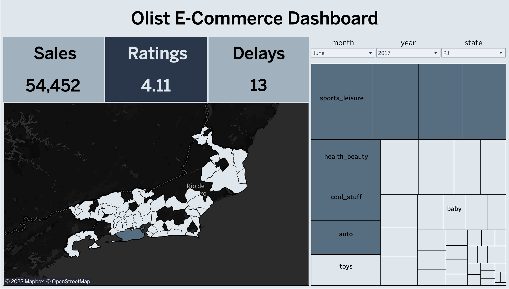

-
E-Commerce Dashboard | Data Visualization |
tableau dashboard
Dashboard containing overview of sales, order ratings and delayed deliveries for selected state and month. Similarly, measures have been summarized for each city within the selected state. Lastly, treemap shows sales broken down by product category for the whole state until a city on map is clicked
 -
Customer Churn Prediction | Machine Learning |
source code
Web page which displays result from machine learning model trained to find customers who are likely to churn. Data from input file uploaded to the web page is transformed prior to being used for prediction by model selected based on recall metric

-
Fake News Detection | Machine Learning + NLP |
source code
Web page serving a machine learning model trained to classify between real and fake news. Model behind the web page has its hyperparameters tuned after an algorithm was finalized depending on performance on preprocessed news data

-
Emotion-based Song Recommender | Programming |
source code
Program which recommend songs from selected emotion based on song lyrics and words related to the emotion. Also, users can list songs or emotions, see song lyrics, add new emotion categories with related words and remove songs from particular emotion categories

-
Travel Destination Catalogue | Frontend Development |
website
Catalogue displaying vacation venues categorized by season they are best to be visited in as alternatives to those who are planning for vacation. Additional information about a destination e.g. hotels, restaurants, things to do etc. can be found from tripadvisor by clicking on the card